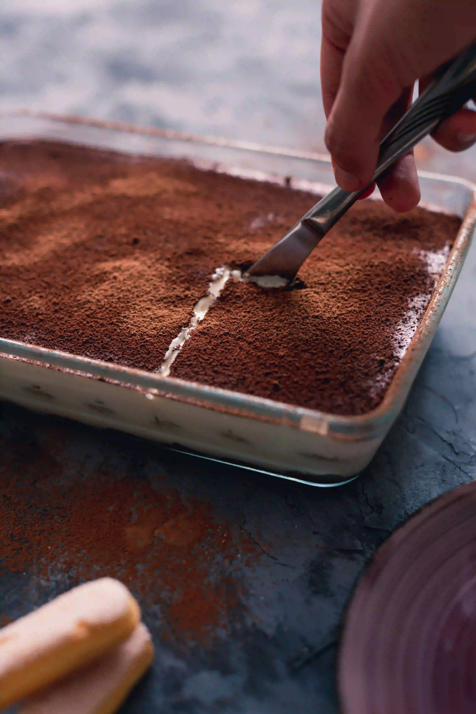

Ett enkelt recept på Tiramisu
Detta är ett klassiskt tiramisu-recept som är enkelt att följa och kommer vara en stor succé!
Ingredienser
6 port- 3 dl vispgrädde
- 2 msk strösocker
- 1 msk vaniljsocker
- 250 g mascarpone
- 2 msk Baileys, Amaretto eller rom
- 3 dl starkt kaffe
- 200 g savoiardikex
Gör så här:
- Vispa grädden med strösocker och vaniljsocker tills den blir fluffig men inte för hårt.
- Tillsätt mascarpone och likör, vispa tills välblandat.
- Doppa savoiardikexen snabbt i kaffe och lägg i botten av en form (ca 15×20 cm).
- Varva kex och kräm, avsluta med kräm.
- Kyl i minst 2 timmar.
- Pudra med kakao vid servering.
Serveringsförslag
